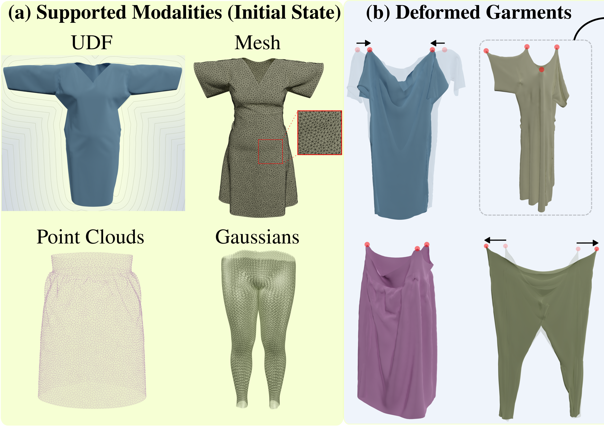
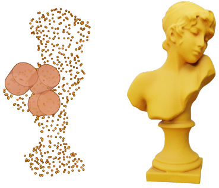
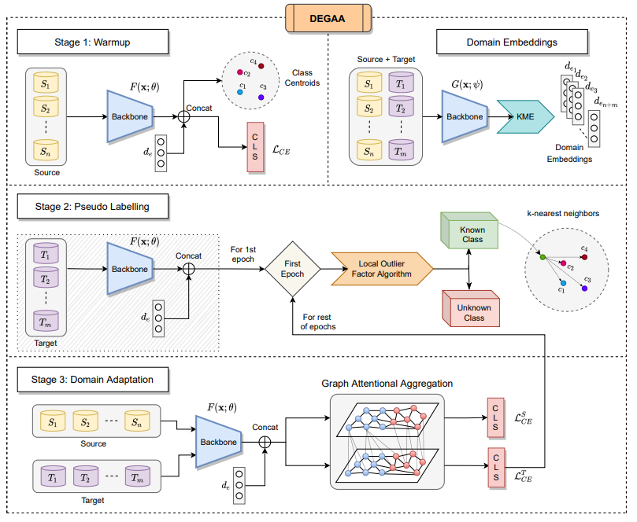
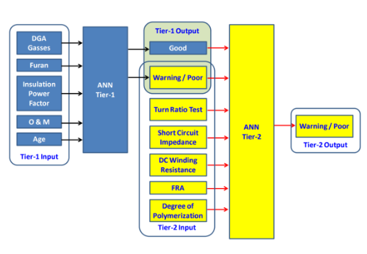
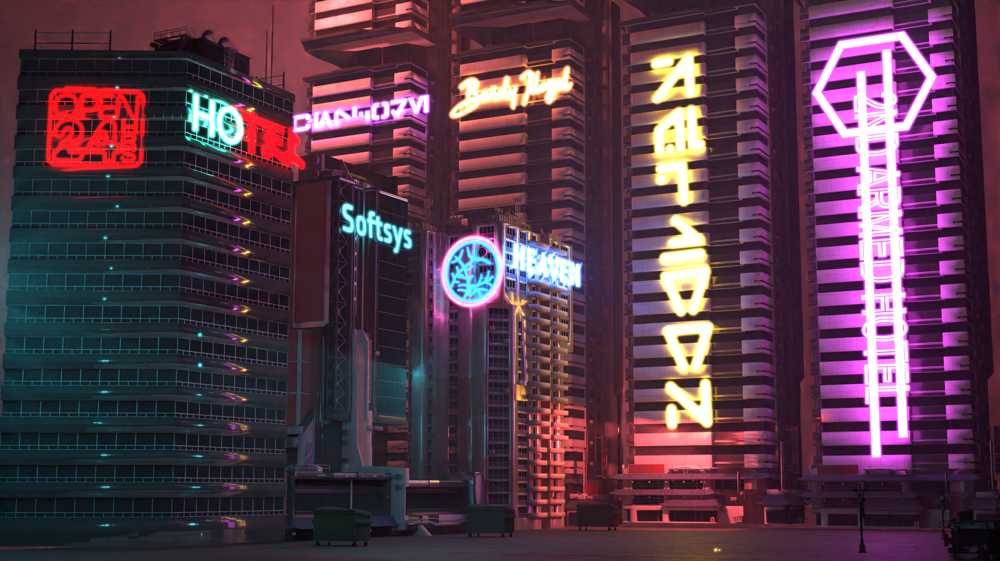
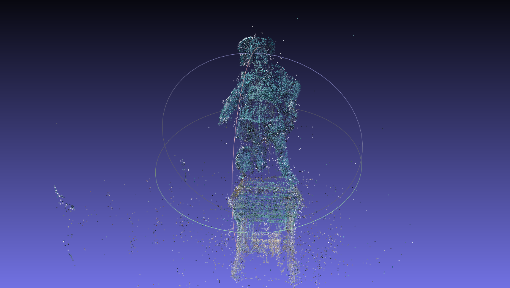
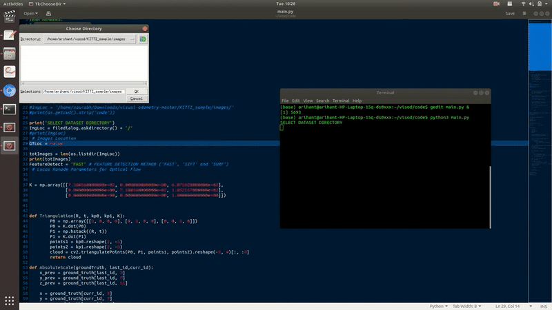

NeuralGarSim: Geometry-agnostic Garment Simulation with Neural Fields
A quasi-static garment simulation method combining Kirchhoff–Love shells with Tangential Differential Calculus.
Computer vision · Graphics · Geometry
I am a final-semester M.Sc. Computer Science student at Saarland University, currently working on my thesis at the 4DQV Lab with Prof. Dr. Christian Theobalt and Dr. Vladislav Golyanik.
01 / Focus
My work explores 3D geometric representations, reconstruction, and neural representations constrained by geometric or physical structure. I’m particularly interested in using explicit geometry and physical priors to make learned 3D models more reliable and controllable.
02 / Selected work

A quasi-static garment simulation method combining Kirchhoff–Love shells with Tangential Differential Calculus.

An explicit 3D grid-based encoding for structured 3D implicit representations.

A new formulation for multi-source, multi-target open-set domain adaptation.

Machine learning techniques for summarizing transformer health from online and offline electrical measurements.
03 / Selected projects

A course ray tracer that won third prize in the Computer Graphics I rendering competition.

An implementation of the fundamental blocks of incremental structure from motion in Python.

A learning project implementing both 2D–2D and 3D–2D visual odometry pipelines.
04 / Updates
NeuralGarSim was accepted to ECCV 2026. See you in Malmö!
Awarded the Deutschlandstipendium scholarship by Saarland University for February–September 2026.
Tutoring 3D and 4D Computer Vision and Image Acquisition Methods at Saarland University.
Started my thesis project at the Max Planck Institute for Informatics, 4DQV Lab.
The NeoTracer rendering competition project page went live.
Joined Saarland University as an M.Sc. Computer Science student.
Our work at MERL was accepted to 3DV 2024.
Started as a research intern at MERL.
Completed my bachelor’s degree in Electrical and Electronics Engineering.
Received the Academic Excellence Prize for best performance in the third year of the B.Tech. program.
Our open-set domain adaptation paper was accepted to the NeurIPS 2021 Pre-registration Workshop.
Started working as a research intern at IST Lisbon.